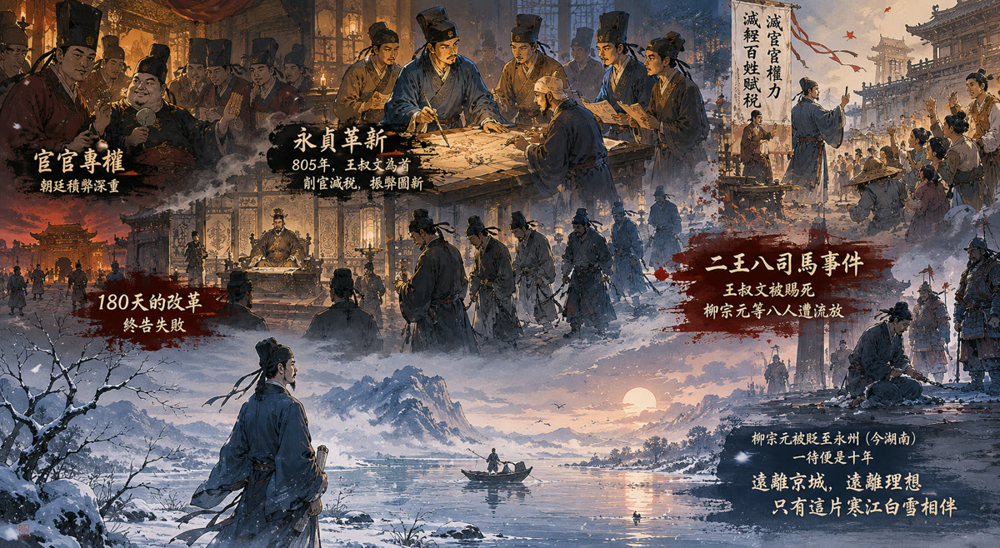
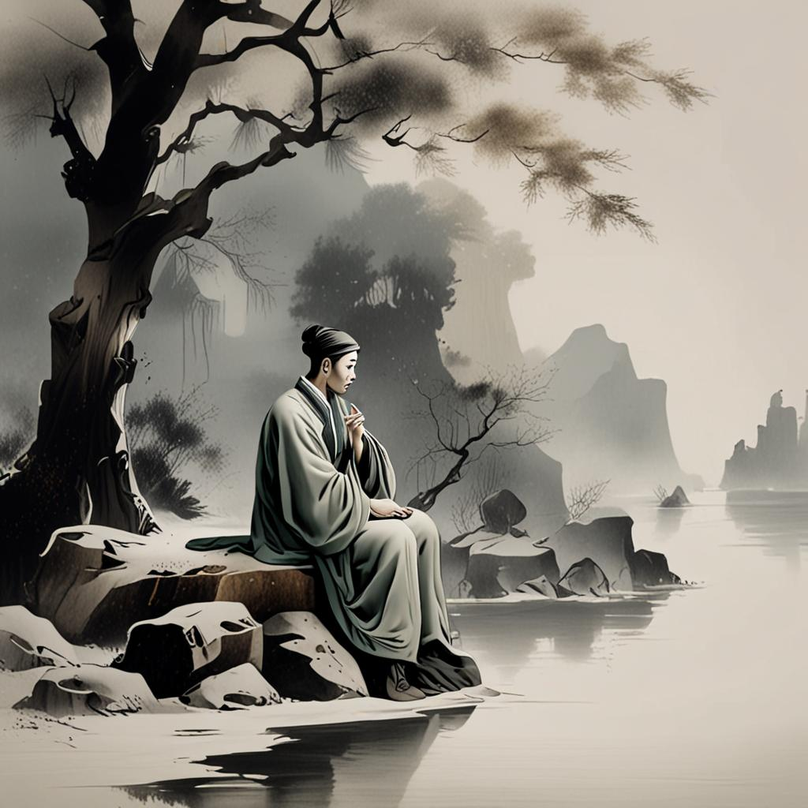

寒江垂釣
柳宗元
正在載入故事……
|
永州，元和十年。
被貶謫的柳宗元，獨坐寒江之畔，
命運之輪，即將轉動……
穿越千年，成為柳宗元

唐朝中期，宦官專權、藩鎮割據，朝廷積弊深重，百姓苦不堪言。
公元 805 年，唐順宗即位，一批懷抱理想的年輕官員——以王叔文為首，聯同柳宗元、劉禹錫等人，發動了史稱「永貞革新」的政治改革，試圖削減宦官權力，減輕百姓賦稅。
然而改革只維持了 180 天便宣告失敗。唐憲宗即位，王叔文被賜死，柳宗元等八人遭到流放，史稱「二王八司馬事件」。
柳宗元被貶至偏遠的永州（今湖南），一待便是十年。遠離京城，遠離理想，只有這片寒江白雪相伴。

千山鳥飛絕，萬徑人蹤滅。
孤舟蓑笠翁，獨釣寒江雪。
這首《江雪》正是柳宗元在永州被貶期間所作，孤獨的漁翁被認為是他內心的寫照。
在這個遊戲裡，你就是柳宗元。
現在是被貶的第十年，你獨自坐在永州的寒江小船上。忽然，一封來自故人的信改變了一切——你必須做出抉擇：
你的每一個選擇，都將決定柳宗元的命運走向，引向四種不同的結局。
現在，化身柳宗元，踏上這段命運之旅——